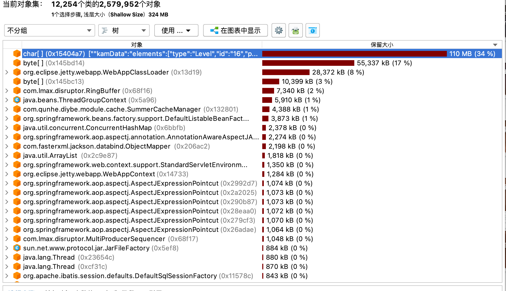
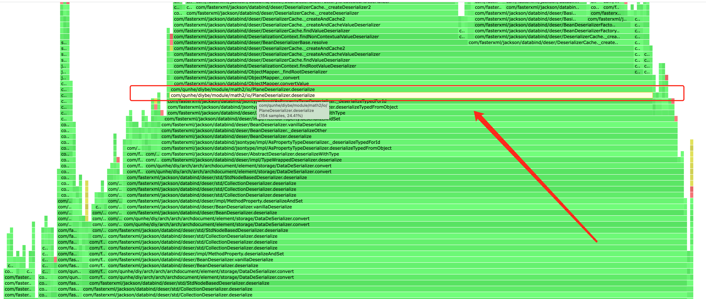
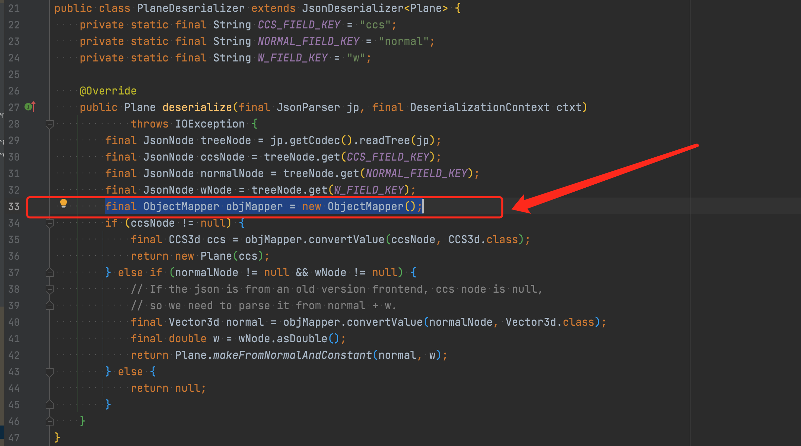

近几个月，发生了不少的线上问题，好巧不巧基本都是我值班。一些问题其实十分典型，不是简单的代码批谬，code review也没第一时间注意到，这里做个记录。
线上FullGC 这个问题由来以久了，这个服务在过去很长一段时间内，都会发生偶发的fullgc，时间间隔不等，有连续fullgc的，也有一个月才fullgc一次的。之前另一位同学进行过初步的排查，因为公司范围内的经验就是大都由大方案引起的内存不足，他在查看之后也确定了是大方案的原因。并且因为我们本来就有对大方案优化的立项安排，所以一直对应fullgc问题的处理就是不影响服务本身就行。
本着探究到底的原则，我还是进行了进一步的排查（其实是受不了报警了）。因为我们的方案数据是离散的，理论上不会有这么大的占用。于是在又一次fullgc后，我下载打开了dump下来的文件。

很明显的看到一个100M的超大对象，其内容确实是方案数据，但其类型是char数组，那大概率是一个String。然后还有一个byte数组。业务代码中完全没有这两个对象的痕迹，于是我只能去其他地方找，最后发现问题出在加密与压缩的逻辑中。
这边补充下，为了减少传输体大小，我们一些接口会进行压缩，同时为了保护公司核心数据资产，一些接口会进行加密。这两个逻辑写在一个自定义的MessageConverter中。
例如写加密压缩数据时：
1 return new EncryptCompressData(MAPPER.writeValueAsString(Result.ok(h5DesignData)));
会先序列化成字符串，然后包装成加密压缩类。之后在一个自定义的MessageConverter中进行处理
1 2 3 4 5 6 7 8 9 10 11 12 13 14 15 16 17 18 @Override protected void writeInternal (final EncryptCompressData encryptCompressData, final HttpOutputMessage httpOutputMessage) throws IOException, HttpMessageNotWritableException { if (encryptCompressData.getBody() == null ) { httpOutputMessage.getHeaders().setContentLength(0L ); } else { try { final byte [] bytes = CompressUtils.base64AfterGzip(( encryptCompressData.getBody().getBytes(StandardCharsets.UTF_8))); EncryptUtils.encrypt(bytes, key); StreamUtils.copy(bytes, httpOutputMessage.getBody()); } catch (final CompressorException e) { throw new IOException(e); } } }
将Controller返回的EncryptCompressData中的String转成byte数组
调用CompressUtils.base64AfterGzip进行压缩
调用EncryptUtils.encrypt进行加密
调用StreamUtils.copy写入到输出流中
读加密压缩数据则是
1 2 3 4 5 6 7 8 9 10 11 12 13 14 @Override protected EncryptCompressData readInternal (final Class<? extends EncryptCompressData> aClass, final HttpInputMessage httpInputMessage) throws IOException, HttpMessageNotReadableException { final byte [] bytes = IOUtils.toByteArray(httpInputMessage.getBody()); EncryptUtils.decryptBytes(bytes, key); try { return new EncryptCompressData(new String(CompressUtils.base64BeforeUngzip(bytes), StandardCharsets.UTF_8)); } catch (final CompressorException e) { throw new IOException(e); } }
然后Controller拿到的就是一个字符串，可以自行反序列化。
那么很明显就发现了中途会产生一个byte[]和一个String。当数据较大时，这两个对象，尤其是String字符对象占用内存会较大。
解决思路 我们可以看到这几个过程都是端到端的，先把整个数据解密了，再把整个数据解压缩了，再把整个数据反序列化。因此会产生很多中间数据，
解决方式是用流（Stream）来处理。需要处理的地方有：
其中加密解密使用的是维吉尼亚加密法，简单来说就是把每一个byte用某种规则替换成另一个byte，因此虽然我不懂这个规则具体是啥，我也可以把它改成成流的，只需把端到端for循环里的逻辑改到Stream的read/write中去。
压缩解压缩使用的base64+gzip加密，apache的二方包中本来就提供了流式的方法。
序列化反序列化，jackson也提供了流失操作。
那么，代码如下：
定义新的包装类型替换EncryptData和EncryptCompressData，使用泛型
为什么？因为原先必须显式地在Controller层处理序列化反序列化实在太不优雅，而且不方便使用流式api
1 2 3 4 5 6 7 8 9 10 11 12 13 14 15 16 17 18 19 20 21 22 public class CipherData <T > private T content; public CipherData (T content) set(content); } public void set (T content) this .content = content; } public T get () return content; } } public class CipherCompressData <T > extends CipherData <T > public CipherCompressData (T content) super (content); } }
接下来，定义两个新的MessageConverter，处理这两种类。MessageConverter中调用流式接口处理InputStream或OutputStream。流失操作封装如下：
1 2 3 4 5 6 7 8 9 10 11 12 13 14 15 16 17 18 19 20 21 22 23 24 25 26 27 28 29 30 31 32 33 34 35 36 37 38 39 40 41 42 43 44 45 46 47 48 49 50 51 52 53 54 public class CipherUtils public static final ObjectMapper DEFAULT_MAPPER = new ObjectMapper(); static { DEFAULT_MAPPER.configure(DeserializationFeature.FAIL_ON_UNKNOWN_PROPERTIES, false ); DEFAULT_MAPPER.setSerializationInclusion(JsonInclude.Include.NON_NULL); DEFAULT_MAPPER.configure(SerializationFeature.ORDER_MAP_ENTRIES_BY_KEYS, true ); } public static <T> T readCipherValue (final InputStream inputStream, final byte [] cipherKey, final Class<T> clazz) throws IOException { try (DecryptInputStream decryptedInput = new DecryptInputStream(inputStream, cipherKey)) { return DEFAULT_MAPPER.readValue(decryptedInput, clazz); } } public static <T> T readCipherCompressValue (final InputStream inputStream, final byte [] cipherKey, final Class<T> clazz) throws IOException, CompressorException { try ( DecryptInputStream decryptedInput = new DecryptInputStream(inputStream, cipherKey); CompressorInputStream gzipInput = new CompressorStreamFactory().createCompressorInputStream( CompressorStreamFactory.GZIP, new Base64InputStream(decryptedInput)) ) { return DEFAULT_MAPPER.readValue(gzipInput, clazz); } } public static void writeCipherValue (final CipherData<Object> data, final byte [] cipherKey, final OutputStream outputStream) throws IOException try (EncryptOutputStream encryptOutput = new EncryptOutputStream(outputStream, cipherKey)) { DEFAULT_MAPPER.writeValue(encryptOutput, data.get()); } } public static void writeCipherCompressValue (final CipherCompressData<Object> data, final byte [] cipherKey, final OutputStream outputStream) throws IOException, CompressorException { try ( EncryptOutputStream encryptOutput = new EncryptOutputStream(outputStream, cipherKey); CompressorOutputStream compressorOutput = new CompressorStreamFactory() .createCompressorOutputStream(CompressorStreamFactory.GZIP, new Base64OutputStream(encryptOutput, true , -1 , null )) ) { DEFAULT_MAPPER.writeValue(compressorOutput, data.get()); } } }
至此，线上再也没有发生过fullgc。
线上OOM 某天突然线上出现大量报警，五花八门，查看日志发现非常醒目的OutOfMemory字眼。基本可以断定为一次OOM引发的故障。首先处理是将异常的机器给隔离了，然后扩容一台。之后慢慢排查。
第一思路是去看内存，有没有什么特别的，通过dump文件，没有什么异常，但是从较大占用的double、int等类型对象来看，经验上应该还是方案及几何数据的占用。
继续通过jstack查看线程信息，搜索业务包名，发现异常，大量线程waiting在了下面代码（已脱敏）的第7行
1 2 3 4 5 6 7 final CountDownLatch countDownLatch = new CountDownLatch(list.size());for (final Object o : list) { final MyStrategy strategy = factory.create(o); final MyRunnable runner = new MyRunnable(strategy, countDownLatch); executor.execute(runner); } countDownLatch.await();
其中，MyRunnable里会执行一段代码，执行完毕或执行异常都会让countDwonLatch countDown，那么为什么还会阻塞在waiting呢？
问题出在拒绝策略上，executor使用的就是AbortPolicy。因为突发的流量升高，导致超过了最大线程数，执行了拒绝策略，但是上层没有进行处理，也就是说，任务被拒绝了，但是没有countDown，因此线程一直waiting，这个线程会持有方案数据，慢慢达到内存限制，导致OOM。
解决思路 因为这个代码是另一个敏捷组写的，我抛给了他们。不过解决方案其实很简单：
可以上层catch Exception，也进行countDown操作
可以自定义拒绝策略，将CountDownLatch传入，执行拒绝时进行countDown
为了保险起见，可以让CountDownLatch的await有一个超时时间（但是这个业务不太好定，因为时间不好估算，其他常场景可以考虑）
思考：还有一个本质问题其实是线程池满了，这就涉及到一个容量预估的问题，虽然大的业务上线都会进行压测并根据压测结果进行容量规划，但是一般的需求都是较为依赖k8s的自动扩缩容。但目前我们自动扩缩容的指标只有机器内存、cpu这些，对线程池打满这样较为业务的情况没有很好的应对措施。我目前的建议也只有采取较为悲观的策略，即调低扩容的阈值，机器能多不能少。
Socket连接数异常 某次灰度发布升阶段后线上报警socket连接数异常，我是第一次碰到这个报警。
隔离回滚之后去异常机器执行netstat -ap，发现确实有很多连接，看来监控不是误报。随机选了一些ip去查来源，发现都是跟oss相关的。于是我想到一个事，之前公司内出过类似故障，因为公司提供的获取OSS方法是通过Factory来build的，每次build都会占用连接，所以这个client必须是单例的，不能每次操作临时build。去看了下上线变更代码，果然如此。
但这里还有一些复杂因素，其实原先的client是注册成Bean的，但由于最近公司在迁云，api有一些变化，需要传入bucketName与ossType（是阿里云还是腾讯云）。所以我们负责的同学想当然的去每次临时build了。
解决思路 听上去将client注册成Bean就可以了，但是有一个烦人的地方是不同的业务方bucketName都不一样，原先大不了大家约定一个，每个bucket一个bean。这次因为迁云周期很长，不少团队bucket还在变化，也就是一个动态的。那么这时候就需要去动态地注册这些bean了。
代码如下：
1 2 3 4 5 6 7 8 9 10 11 12 13 14 15 16 17 18 19 20 21 22 23 24 25 26 27 28 29 30 31 32 33 34 35 36 37 @Component public class CustomBeanManager implements ApplicationContextAware private ApplicationContext applicationContext; public synchronized <T> void putBean (String name, T object) if (applicationContext.containsBean(name)) { return ; } ConfigurableApplicationContext context = (ConfigurableApplicationContext) applicationContext; DefaultListableBeanFactory factory = (DefaultListableBeanFactory) context.getBeanFactory(); factory.registerSingleton(name, object); } public <T> T getBean (String name, Class<T> clazz) { if (!applicationContext.containsBean(name)) { return null ; } return applicationContext.getBean(name, clazz); } public <T> T getBean (String name, Class<T> clazz, Supplier<T> supplier) { if (!applicationContext.containsBean(name)) { T res = supplier.get(); putBean(name, res); return res; } return applicationContext.getBean(name, clazz); } @Override public void setApplicationContext (final ApplicationContext applicationContext) throws BeansException { this .applicationContext = applicationContext; } }
思路就是将BucketName与OssType组合成Bean的名称，如果不存在这个bean就创建，并放入Sring容器中，如果存在直接返回。需要注意的是上方代码是一个通用组件，创建OssClient的过程由业务方传入为supplier。
接口响应异常 这个问题其实不是线上的，是在feature环境持续很久排查很久的，值的分享。
背景是我们进行了一些架构的升级，数据结构的变更，因此翻新了一些接口。其中数据保存读取的接口耗时异常的慢，夸张到要10s才能读取，虽然数据也挺大的，有10M，但是这个时间也是不合理的。
初期我们通过排查代码逻辑查看是否有问题，但没有发现明显异常，因为这个接口主要就是序列化反序列化，我们自己定义的序列化器又反复检查没有问题，所以我们一开始把原因归结为数据太大，因此序列化较慢，从debug记录的耗时看也是如此。不过后面再复盘的时候，考虑即使数据大，序列化也不应该消耗如此之久的时间。
后续的排查依赖了火焰图 分析。具体是使用Arthas来生成火焰图。
如何读懂火焰图
每一列表示一个调用栈，每一格是一个函数
纵轴表示了栈的深度，按调用顺序从下到上排序，最上方表示采样时正占用cpu的函数
横轴表示采样数，长度越宽，表示这个函数耗时越长。横轴的顺序是按字典排序的，没有实际意义。
要看接口耗时问题，基本就是去找有哪些函数占的格子特别的宽。
解决思路 回到主题，上面的问题把火焰图生成并分析之后，终于发现了异常点。

大量的时间耗在deserialize方法，deserialize方法中又是_findRootDeserializer占用大量耗时。
该方法用于获取当前根类型的反序列化器。而ObjectMapper内设有缓存机制，用于缓存当前javaType对应的反序列化器，但此时缓存并未生效，且每次调用都要去构造反序列化器，调用栈底部在PlaneDeserializer类中，翻看代码继续分析

每次都会去新建ObjectMapper，导致缓存机制失效，序列化反序列化耗时倍增。同时不只Plane这一个类，Math包下所有类几乎都是如此，因为Math是公司提供的几何基础包，我们保存的数据中包含大量的几何信息，导致了接口慢这个问题。
至于为什么这样的基础包有问题却没发现，大概是因为只有数据量大的时候才能体现出来差异，同时我们又是公司内第一个保存大量几何数据的，让我们踩了这个坑。
后续反馈给几何团队，升级包解决了问题。